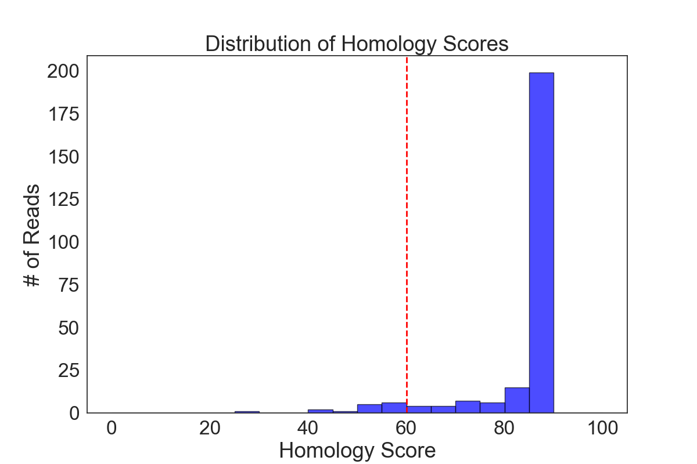
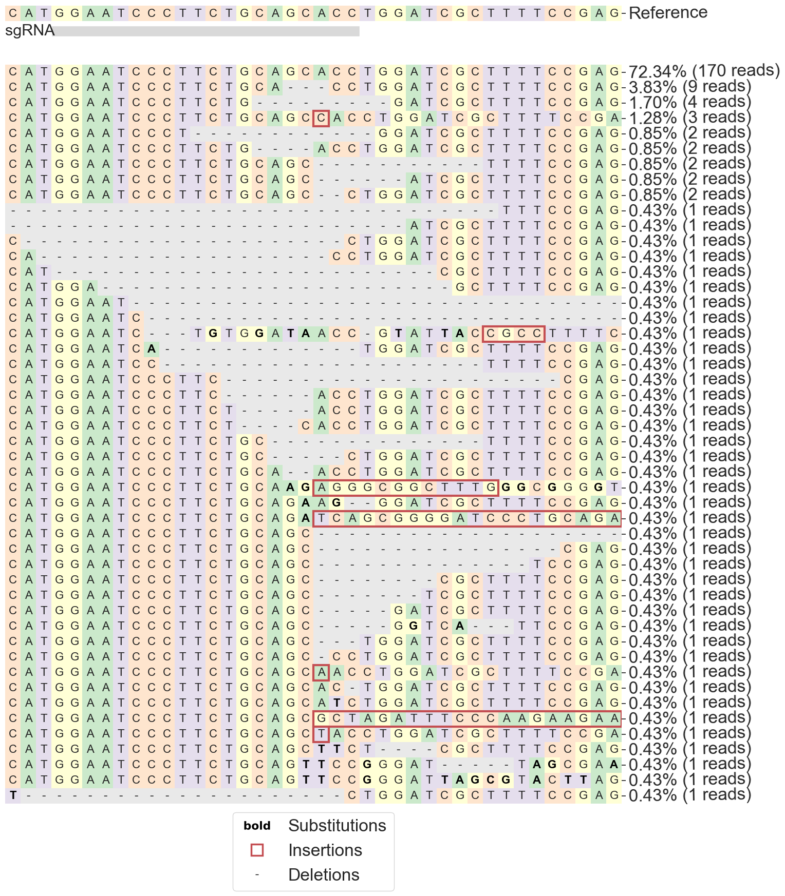
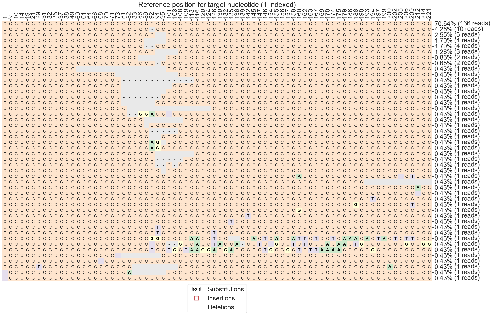

Guardrails — 4 out of 9 failed
Failed Guardrails (4)
Guardrail Warning! Low number of total reads: <10000. Total reads: 250.
Guardrail Warning! >=1.0% of reads have modifications at the start or end. Total reads: 235, Irregular reads: 235.
Guardrail Warning! >=0.2% of substitutions were outside of the quantification window. Total substitutions: 280, Substitutions outside window: 270.
Guardrail Warning! >=30.0% of modifications were substitutions. This could potentially indicate poor sequencing quality. Total modifications: 924, Substitutions: 280.
Passed Guardrails (5)
Guardrail Passed: Read alignment rate above threshold. 94.0% of reads aligned.
Guardrail Passed: Sufficient ratio of modifications inside quantification window.
Guardrail Passed: All amplicon lengths above minimum threshold (50).
Guardrail Passed: All guide lengths above minimum threshold (19).
Guardrail Passed: Amplicon lengths within acceptable range of read lengths.
Cas9
CRISPResso2 run information
Data: Mapping statistics
CRISPResso version: 2.3.4
Run completed: 2026-02-20 12:06:15
Amplicon sequence:
CGGATGTTCCAATCAGTACGCAGAGAGTCGCCGTCTCCAAGGTGAAAGCGGAAGTAGGGCCTTCGCGCACCTCATGGAATCCCTTCTGCAGCACCTGGATCGCTTTTCCGAGCTTCTGGCGGTCTCAAGCACTACCTACGTCAGCACCTGGGACCCCGCCACCGTGCGCCGGGCCTTGCAGTGGGCGCGCTACCTGCGCCACATCCATCGGCGCTTTGGTCGG
Guide sequence:
GGAATCCCTTCTGCAGCACC
Command used:
/home/snichol2/micromamba/envs/c2/bin/CRISPResso -o /mnt/c/Users/Snic9/Edilytics/CRISPResso2_tests/cli_integration_tests/CRISPRessoBatch_on_FANC --name Cas9 --aln_seed_count 5 --prime_editing_pegRNA_scaffold_min_match_length 1 --max_paired_end_reads_overlap None --needleman_wunsch_aln_matrix_loc EDNAFULL --guide_seq GGAATCCCTTCTGCAGCACC --exclude_bp_from_left 15 --amplicon_seq CGGATGTTCCAATCAGTACGCAGAGAGTCGCCGTCTCCAAGGTGAAAGCGGAAGTAGGGCCTTCGCGCACCTCATGGAATCCCTTCTGCAGCACCTGGATCGCTTTTCCGAGCTTCTGGCGGTCTCAAGCACTACCTACGTCAGCACCTGGGACCCCGCCACCGTGCGCCGGGCCTTGCAGTGGGCGCGCTACCTGCGCCACATCCATCGGCGCTTTGGTCGG --min_frequency_alleles_around_cut_to_plot 0.2 --min_single_bp_quality 0 --base_editor_output --aln_seed_len 10 --verbosity 3 --needleman_wunsch_gap_incentive 1 --needleman_wunsch_gap_extend -2 --flexiguide_gap_extend_penalty -2 --prime_editing_gap_extend_penalty 0 --fastq_r1 inputs/FANC.Cas9.fastq --trimmomatic_command None --flash_command None --conversion_nuc_to T --min_average_read_quality 0 --min_bp_quality_or_N 0 --max_rows_alleles_around_cut_to_plot 50 --place_report_in_output_folder --aln_seed_min 2 --file_prefix Cas9 --config_file None --default_min_aln_score 60 --needleman_wunsch_gap_open -20 --fastp_command fastp --plot_window_size 20 --conversion_nuc_from C --prime_editing_gap_open_penalty -50 --flexiguide_gap_open_penalty -20 --flexiguide_seq None --n_processes 1 --flexiguide_homology 80 --amplicon_name Reference --prime_editing_pegRNA_extension_quantification_window_size 5 --quantification_window_size 1 --min_paired_end_reads_overlap 10 --quantification_window_center -3 --halt_on_plot_fail --base_editor_target_ref_skip_allele_count 0 --exclude_bp_from_right 15 --debug
Parameters:
allele_plot_pcts_only_for_assigned_reference: False aln_seed_count: 5 aln_seed_len: 10 aln_seed_min: 2 amplicon_coordinates: amplicon_min_alignment_score: amplicon_name: Reference amplicon_seq: CGGATGTTCCAATCAGTACGCAGAGAGTCGCCGTCTCCAAGGTGAAAGCGGAAGTAGGGCCTTCGCGCACCTCATGGAATCCCTTCTGCAGCACCTGGATCGCTTTTCCGAGCTTCTGGCGGTCTCAAGCACTACCTACGTCAGCACCTGGGACCCCGCCACCGTGCGCCGGGCCTTGCAGTGGGCGCGCTACCTGCGCCACATCCATCGGCGCTTTGGTCGG annotate_wildtype_allele: assign_ambiguous_alignments_to_first_reference: False auto: False bam_chr_loc: bam_input: bam_output: False base_editor_consider_changes_outside_qw: False base_editor_output: True base_editor_target_ref_skip_allele_count: 0 bowtie2_index: coding_seq: config_file: None conversion_nuc_from: C conversion_nuc_to: T crispresso1_mode: False crispresso_merge: False debug: True default_min_aln_score: 60 disable_guardrails: False discard_guide_positions_overhanging_amplicon_edge: False discard_indel_reads: False display_name: dsODN: dump: False exclude_bp_from_left: 15 exclude_bp_from_right: 15 expand_allele_plots_by_quantification: False expand_ambiguous_alignments: False expected_hdr_amplicon_seq: fastp_command: fastp fastp_options_string: fastq_output: False fastq_r1: inputs/FANC.Cas9.fastq fastq_r2: file_prefix: Cas9 flash_command: None flexiguide_gap_extend_penalty: -2 flexiguide_gap_open_penalty: -20 flexiguide_homology: 80 flexiguide_name: flexiguide_seq: None force_merge_pairs: False guide_name: guide_seq: GGAATCCCTTCTGCAGCACC halt_on_plot_fail: True ignore_deletions: False ignore_insertions: False ignore_substitutions: False keep_intermediate: False max_paired_end_reads_overlap: None max_rows_alleles_around_cut_to_plot: 50 min_average_read_quality: 0 min_bp_quality_or_N: 0 min_frequency_alleles_around_cut_to_plot: 0.2 min_paired_end_reads_overlap: 10 min_single_bp_quality: 0 n_processes: 1 name: Cas9 needleman_wunsch_aln_matrix_loc: EDNAFULL needleman_wunsch_gap_extend: -2 needleman_wunsch_gap_incentive: 1 needleman_wunsch_gap_open: -20 no_rerun: False output_folder: /mnt/c/Users/Snic9/Edilytics/CRISPResso2_tests/cli_integration_tests/CRISPRessoBatch_on_FANC place_report_in_output_folder: True plot_histogram_outliers: False plot_window_size: 20 prime_editing_gap_extend_penalty: 0 prime_editing_gap_open_penalty: -50 prime_editing_nicking_guide_seq: prime_editing_override_prime_edited_ref_seq: prime_editing_override_sequence_checks: False prime_editing_pegRNA_extension_quantification_window_size: 5 prime_editing_pegRNA_extension_seq: prime_editing_pegRNA_scaffold_min_match_length: 1 prime_editing_pegRNA_scaffold_seq: prime_editing_pegRNA_spacer_seq: quantification_window_center: -3 quantification_window_coordinates: None quantification_window_size: 1 samtools_exclude_flags: 0 save_also_png: False split_interleaved_input: False stringent_flash_merging: False suppress_amplicon_name_truncation: False suppress_plots: False suppress_report: False trim_sequences: False trimmomatic_command: None trimmomatic_options_string: use_legacy_insertion_quantification: False use_matplotlib: False vcf_output: False verbosity: 3 write_cleaned_report: False write_detailed_allele_table: False zip_output: False

Data: Alleles Homology Scores
Allele assignments
Nucleotide composition
Modification lengths
Data: Indel histogram
Indel characterization
Allele plots

Data: Allele frequency table
Base editing
Data: Nucleotide frequencies
Data: Nucleotide frequencies


Data: Allele frequency table